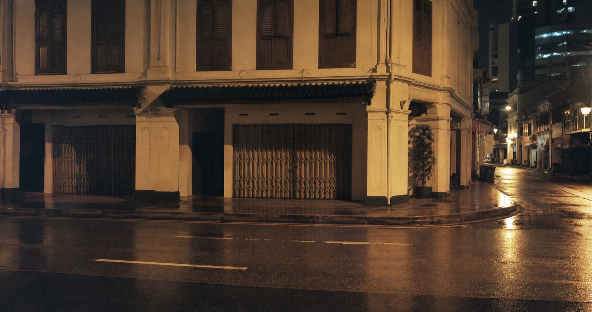
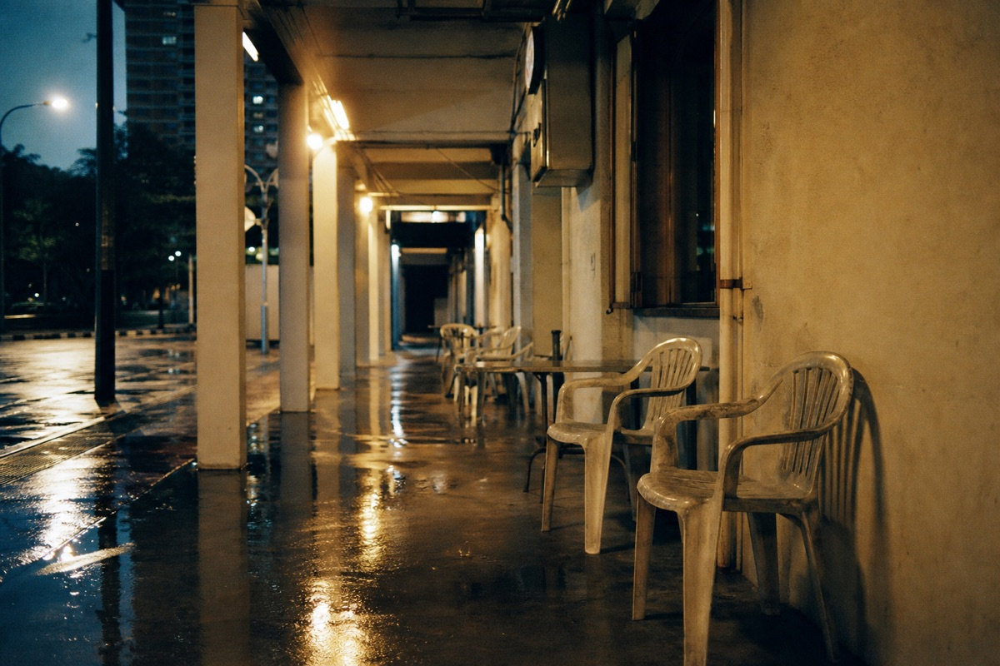
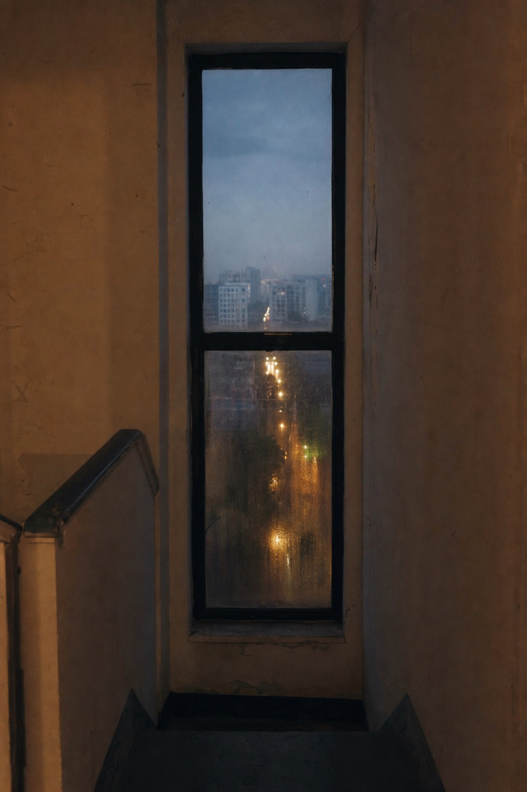

The streets became quieter without becoming empty. Light remained in the places where work had just ended.

Demonstration Series
July 2026
A provisional sequence about rain, quiet storefronts, and the hour after a place closes. All photographs are generated placeholders and should be replaced.


The streets became quieter without becoming empty. Light remained in the places where work had just ended.
